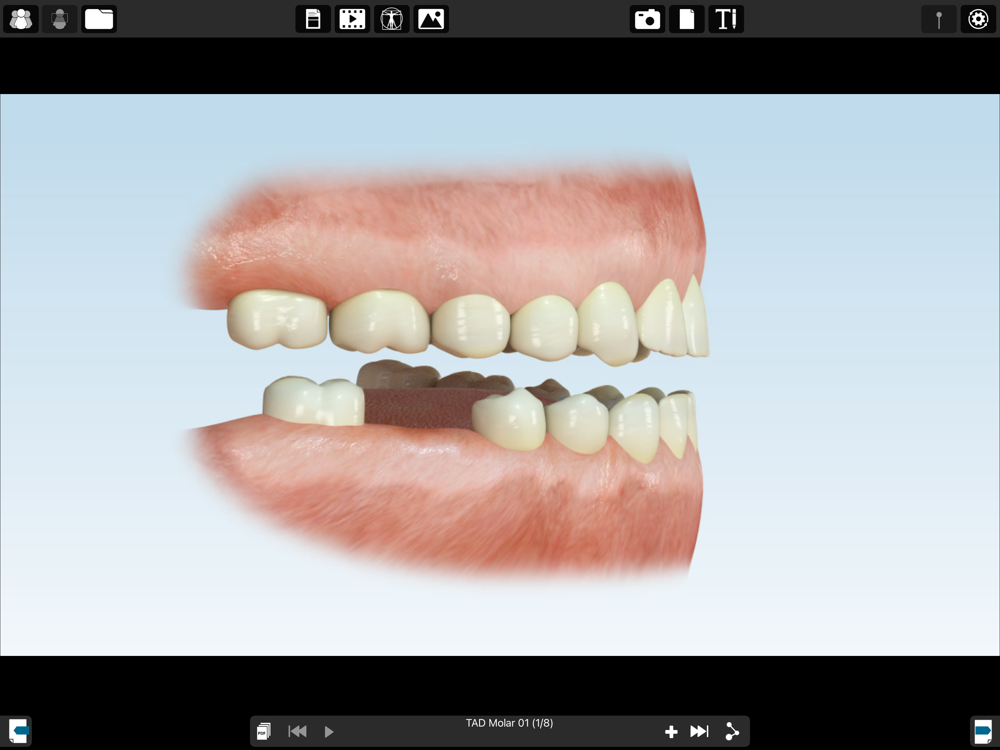
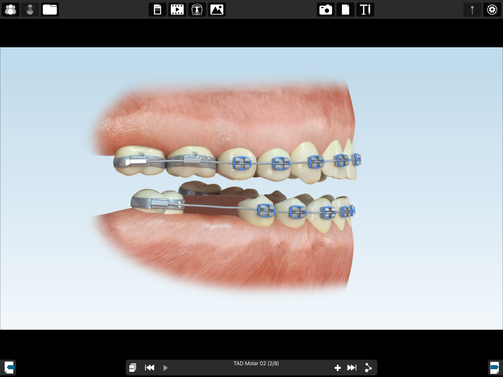
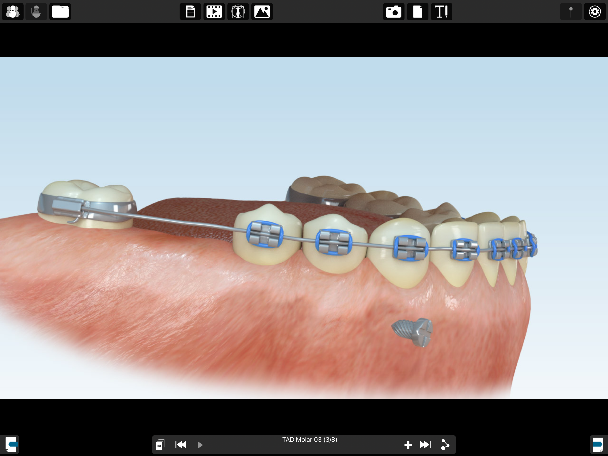
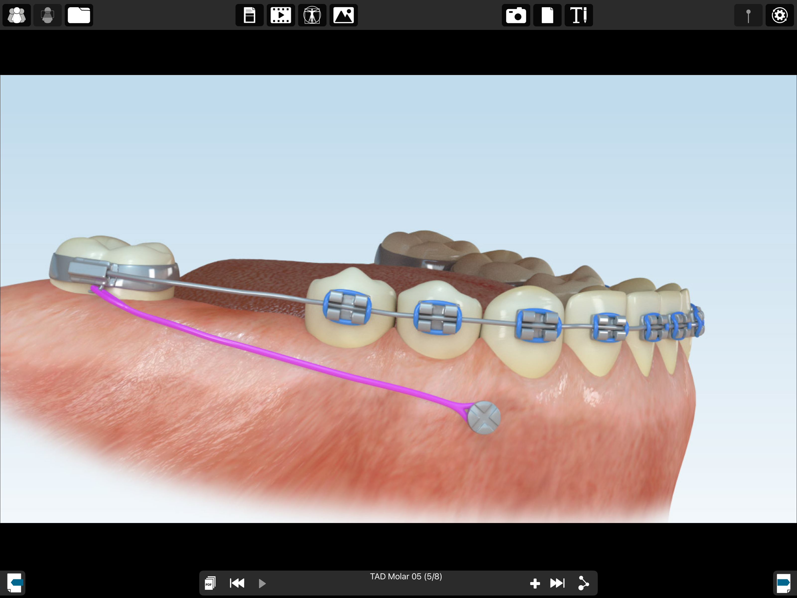
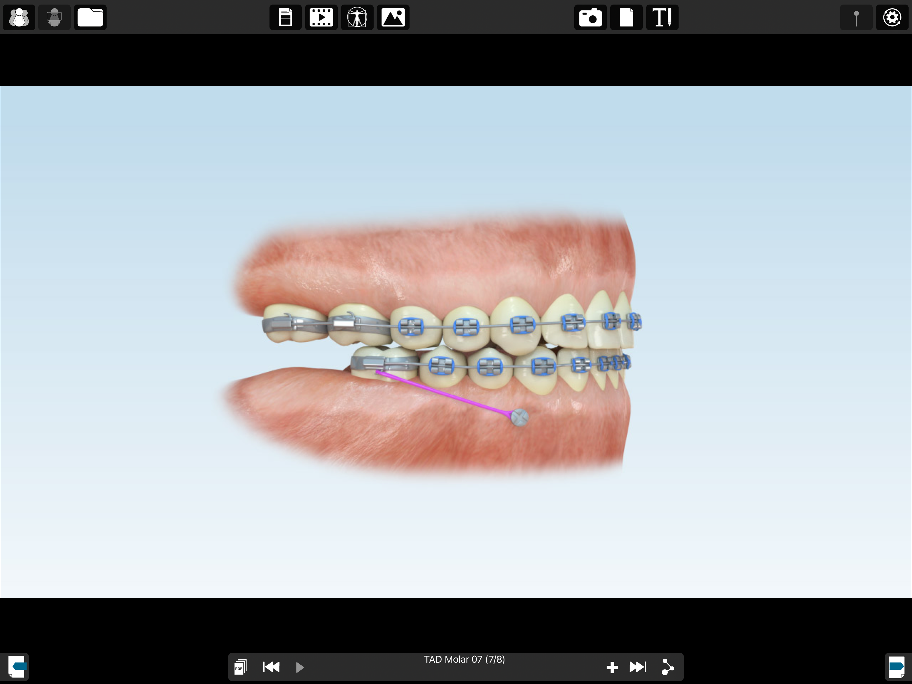
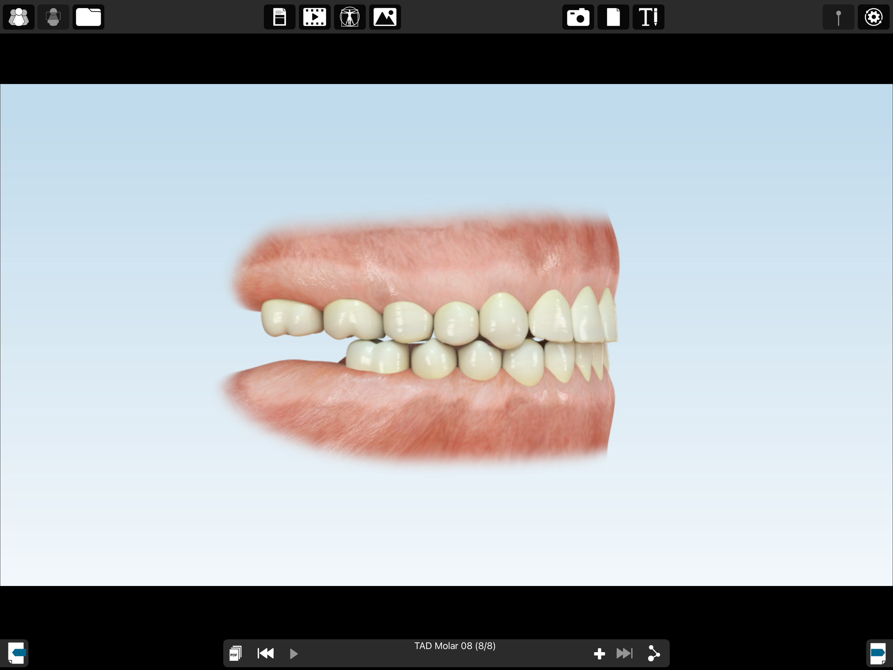

MKG im Carree · Dr. Julia Malik & Dr. Christoph Malik
Back to patient informationMini-screw: an example of lower-jaw treatment
A schematic example of orthodontic tooth movement in the lower jaw with additional anchorage. These images show different stages of treatment, not step-by-step surgical instructions. Palatal screws and the individual surgical guide are not shown here.

1 · Starting situation
The gap and positions of neighbouring teeth are assessed together with the orthodontist.

2 · Orthodontic appliance
Brackets and an archwire guide the planned movement. Anchorage is incorporated into the overall treatment concept.

3 · Additional support in bone
A mini-screw provides an anchor independent of the teeth. Its safe position is planned individually.

4 · Connection to the appliance
The purple connector schematically illustrates force transmission between the mini-screw and appliance.

5 · Controlled tooth movement
The orthodontist monitors movement and adjusts forces. Screw stability and healthy surrounding tissues are checked.

6 · Planned treatment goal
The screw is removed after completing its task. The tooth position needs continued retention. This image does not guarantee success.
06151 786540 · info@mkg-im-carree.de
Back to patient information